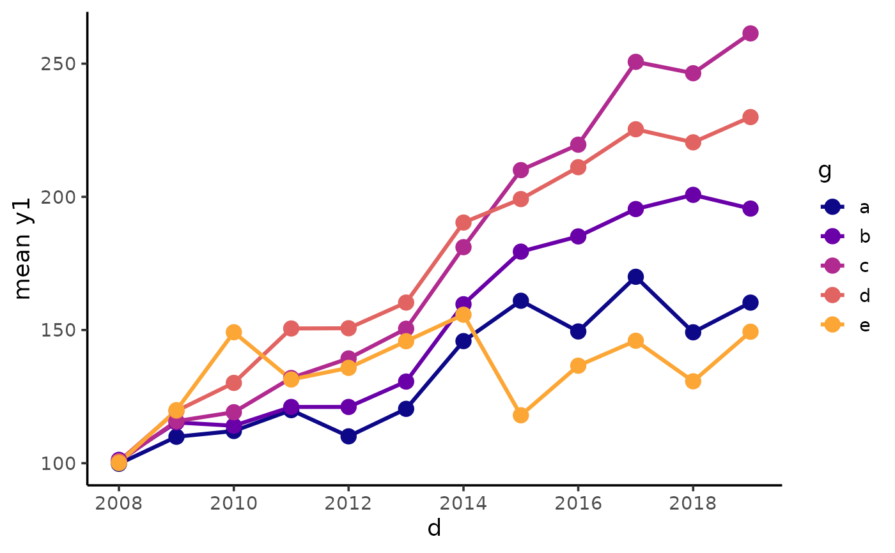

Easily generate line graphs using ggplot2 with a simplified
customization interface for common modifications with static (ggplot) and
interactive (plotly) output options. Unlike
geom_line, plot_line() will automatically check if
there are multiple values of the y-axis variable for each level of the
x-axis variable and/or other grouping variables (e.g. used for faceting)
and will aggregate values for you using a summary statistic specified via
the "stat" argument (default is the mean). This effectively produces a
single line per group level combination and should make your line graphs
easier to read. If such aggregation is necessary, a message explaining what
is being done and the number of rows affected will be printed to the
console. If your main goal is to plot sample group means or medians and
error bars, see plot_stat_error instead. The static output is
useful for producing static reports (e.g. for manuscripts) and is readily
customized further using ggplot2 syntax. The interactive output is helpful
for exploring the data and producing dynamic html reports. Line graphs are
commonly used to show changes over time e.g. in time-series analysis. See
this
blog post for an introduction to ggplot2.
plot_line(
data,
y,
x,
...,
colour_var = NULL,
line_type_var = NULL,
stat = c("mean", "quantile", "sum", "count"),
qprob = 0.5,
xlab = NULL,
ylab = NULL,
title = NULL,
title_hjust = 0.5,
caption = NULL,
caption_hjust = 0,
colour_var_title = NULL,
line_type_var_title = NULL,
ylim = c(NA, NA),
ybreaks = ggplot2::waiver(),
transform_y = FALSE,
y_transformation = "log10",
y_var_labs = ggplot2::waiver(),
xlim = c(NA, NA),
xbreaks = ggplot2::waiver(),
transform_x = FALSE,
x_transformation = "log10",
x_var_labs = ggplot2::waiver(),
x_var_order_by_y = NULL,
x_var_order = NULL,
colour_var_order_by_y = NULL,
colour_var_order = NULL,
line_type_var_order_by_y = NULL,
line_type_var_order = NULL,
colour_var_labs = NULL,
line_type_var_labs = NULL,
colour_var_values = NULL,
line_type_var_values = NULL,
palette = c("plasma", "C", "magma", "A", "inferno", "B", "viridis", "D", "cividis",
"E"),
palette_direction = c("d2l", "l2d"),
palette_begin = 0,
palette_end = 0.8,
alpha = 1,
greyscale = FALSE,
line_size = 1.1,
line_type = c("solid", "dashed", "dotted", "dotdash", "longdash", "twodash"),
points = FALSE,
point_colour = "black",
point_fill = "black",
point_alpha = 1,
point_shape = "circle",
point_size = 3,
theme = c("bw", "classic", "grey", "light", "dark", "minimal"),
text_size = 14,
font = c("sans", "serif", "mono"),
facet_var = NULL,
facet_var_order = NULL,
facet_var_labs = NULL,
facet_var_strip_position = c("top", "bottom"),
facet_var_text_bold = TRUE,
legend_position = c("right", "left", "top", "bottom"),
omit_legend = FALSE,
interactive = FALSE,
aesthetic_options = FALSE,
verbose = FALSE
)A data frame or tibble containing at least one categorical variable.
A numeric variable containing the values you would like plotted on the y-axis (quoted or unquoted), e.g. y = "variable" or y = variable.
Typically a numeric or date/POSIX.ct variable to use for the x-axis (quoted or unquoted), e.g. x = "variable" or x = variable. If you assign a variable of a different class to x, it will be converted to a factor and arranged in order of factor levels (left to right), unless it is already a factor. The ordering of such variables can be modified with x_var_order* arguments.
Other graphical parameters (not associated with variables) to be
passed to geom_line to be applied to all lines can
be specified as well, e.g. "colour", "linejoin" or "lineend". To see some
of the available options in a web browser, set the aesthetic_options
argument to TRUE. For colour options, see colour_options.
Use if you want to assign a categorical variable to line
colour, e.g. colour_var = "grouping_variable" or colour_var =
grouping_variable. Produces separate lines for each level of the colour
variable. See aes for details.
Use if you want to assign a categorical variable to the
line type, e.g. line_type_var = "grouping_variable" or line_type_var =
grouping_variable. Produces separate lines for each level of the fill
variable. See aes for details.
If multiple values of the y-variable are detected for at least one grouping variable level combination based on variables assigned to any of the "x", "colour_var", "line_type_var", or "facet_var" arguments, the specified summary "stat" is used to aggregate the data such that a single line per group/x level combination is plotted. Options include "mean" (the default), "quantile", "sum", and "count". This argument supports partial matching, so "q" would be read as "quantile" for example. If "quantile" is chosen, then the probability value to use to extract a quantile can be specified with the "qprob" argument.
Probability value to pass to quantile if
stat = "quantile". Default is 0.5 to get the median.
Specify/overwrite the x-axis label using a character string, e.g. "x-axis label"
Specify/overwrite the y-axis label using a character string, e.g. "y-axis label". Note that in cases wehre a summary statistic was used to aggregate some of the y-variable values (see "stat" argument description), the y-axis label will automatically be updated to specify which summary statistic was used by default.
Add a main title to the plot using a character string, e.g. "bar plots of y for each group of x"
Left-to-right/horizontal justification (alignment) of the main plot title. Accepts values from 0 (far left) to 1 (far right). Default is 0.5 (centre).
Add a figure caption to the bottom of the plot using a character string.
Left-to-right/horizontal justification (alignment) of the caption. Accepts values from 0 (far left) to 1 (far right). Default is 0 (left).
If a variable has been assigned to colour using colour_var, this allows you to modify the variable label in the plot legend.
If a variable has been assigned to line type using line_type_var, this allows you to modify the variable label in the plot legend.
specify the y-axis limits, e.g. ylim = c(lower_limit, upper_limit). Use NA for the existing minimum or maximum value of y, e.g. the default is ylim = c(NA, NA).
This allows you to change the break points to use for tick
marks on the y-axis. seq is particularly useful here. See
scale_continuous for details. If ybreaks is
specified, then ylim should be also.
Would you like to transform the y axis (TRUE or FALSE)?
If transform_y = TRUE, this determines the
transformation to be applied. Common choices include "log10" (the default),
"log2", "sqrt", or "exp". See scale_y_continuous for
details.
Allows you to modify the labels displayed with the y-axis
tick marks. See scale_continuous for details.
If x is a numeric or date variable, this allows you to specify
the x-axis limits, e.g. xlim = c(lower_limit, upper_limit). Use NA for the
existing minimum or maximum value of y, e.g. the default is ylim = c(NA,
NA). See scale_x_continuous if x is a numeric
variable and scale_x_date if x is a date variable
for details.
If x is a numeric variable, this allows you to change the
break points to use for tick marks via a numeric vector. seq
is particularly useful here. See scale_x_continuous
for details. If x is a date variable, you can instead specify the break
interval to use with a string, e.g. "2 years" to use a 2-year break point
interval. See the "date_breaks" argument documentation under
scale_x_date for details. If xbreaks is
specified for a numeric variable, then xlim should be also.
Would you like to transform the x-axis (TRUE or FALSE)? Only works for numeric variables.
If transform_x = TRUE, this determines the
transformation to be applied. Common choices include "log10" (the default),
"log2", "sqrt", or "exp". See scale_continuous for
details. Only works for numeric variables.
Allows you to modify the labels displayed with the x-axis
tick marks. See scale_x_continuous if x is a numeric
variable, scale_x_date if x is a date variable, or
fct_recode if x is a character variable/factor for
details.
If a non-numeric/non-date variable has been assigned to x, this allows you to sort the points used to draw lines in order of increasing/ascending ("i" or "a") or decreasing ("d") value of y.
If a non-numeric/non-date variable has been assigned to x,
this allows you to manually modify the order of the variable groups, e.g. x
= grouping_variable, x_var_order = c("group_2", "group_1"). See
fct_relevel for details.
If a variable has been assigned to colour_var, this allows you to sort the lines in order of increasing/ascending ("i" or "a") or decreasing ("d") value of y.
If a variable has been assigned to colour using
colour_var, this allows you to modify the order of the variable
groups, e.g. colour_var = grouping_variable, colour_var_order =
c("group_2", "group_1"). See fct_relevel for
details.
If a variable has been assigned to line_type_var, this allows you to sort the lines in order of increasing/ascending ("i" or "a") or decreasing ("d") value of y.
If a variable has been assigned to line type using
line_type_var, this allows you to modify the order of the variable groups,
e.g. line_type_var = grouping_variable, line_type_var_order = c("group_2",
"group_1"). See fct_relevel for details.
If a variable has been assigned to colour using
colour_var, this allows you to modify the labels of the variable groups,
e.g. colour_var = grouping_variable, colour_var_labs =
c("group_1_new_label" = "group_1_old_label", "group_2_new_label" =
"group_2_old_label"). See fct_recode for details.
If a variable has been assigned to line type using
line_type_var, this allows you to modify the labels of the variable groups,
e.g. line_type_var = grouping_variable, line_type_var_labs =
c("group_1_new_label" = "group_1_old_label", "group_2_new_label" =
"group_2_old_label"). See fct_recode for details.
If a variable has been assigned to colour using
colour_var, this allows you to modify the colours assigned to the outline
of each of the variable groups, e.g. colour_var = grouping_variable,
colour_var_values = c("blue", "red"). See
scale_fill_manual for details. For the colour
options available in base R, see colour_options.
If a variable has been assigned to line type
using line_type_var, this allows you to modify the line types assigned to
each of the variable groups, e.g. line_type_var = grouping_variable,
fill_var_values = c("solid", "dashed"). See
scale_linetype_manual for details. Options are the
same as those listed under the "line_type" argument.
If a variable is assigned to colour_var, this determines which viridis colour palette to use. Options include "plasma" or "C" (default), "magma" or "A", "inferno" or "B", "viridis" or "D", and "cividis" or "E". See this link for examples. You can override these colour palettes with colour_var_values.
Choose "d2l" for dark to light (default) or "l2d" for light to dark.
Value between 0 and 1 that determines where along the
full range of the chosen colour palette's spectrum to begin sampling
colours. See scale_colour_viridis_d for details.
Value between 0 and 1 that determines where along the full
range of the chosen colour palette's spectrum to end sampling colours. See
scale_colour_viridis_d for details.
This adjusts the transparency/opacity of the lines on the plot, ranging from 0 = 100% transparent to 1 = 100% opaque.
Set to TRUE if you want the plot converted to greyscale.
Controls the thickness of the lines.
Use this to modify the type of lines used by
geom_line if line_type_var is unspecified. Options
are: "solid", "dashed", "dotted", "dotdash", "longdash", and "twodash".
Would you like to add points to the plot with a
geom_point layer (TRUE or FALSE)? Default is FALSE.
If points = TRUE and no variable has been assigned to colour_var, this determines the colour to use for points.
If points = TRUE and point_shape is one of the options that have a fill aesthetic (see below), this controls the fill colour of the points.
If points = TRUE, this controls the transparency of the points.
Point shape to use if points = TRUE. Only shapes 21-25 have both fill and colour aesthetic parameters; the others only use colour. To see the options you can view the ggplot2 aesthetic options web page by setting the aesthetic_options argument to TRUE.
If points = TRUE, this controls the size of the points.
Adjusts the theme using 1 of 6 predefined "complete" theme
templates provided by ggplot2. Currently supported options are: "classic",
"bw" (the elucidate default), "grey" (the ggplot2 default), "light",
"dark", & "minimal". See theme_bw for more
information.
This controls the size of all plot text. Default = 14.
This controls the font of all plot text. Default = "sans" (Arial). Other options include "serif" (Times New Roman) and "mono" (Courier New).
Use if you want separate plots for each level of a grouping
variable (i.e. a faceted plot), e.g. facet_var = "grouping_variable" or
facet_var = grouping_variable. See facet_wrap for
details.
If a variable has been assigned for faceting using
facet_var, this allows you to modify the order of the variable groups, e.g.
facet_var = grouping_variable, facet_var_order = c("group_2", "group_1").
See fct_relevel for details.
If a variable has been assigned for faceting using
facet_var, this allows you to modify the labels of the variable groups
which will appear in the facet strips, e.g. facet_var = grouping_variable,
facet_var_labs = c("group_1_new_label" = "group_1_old_label",
"group_2_new_label" = "group_2_old_label"). See
fct_recode for details.
If a variable has been assigned for faceting using facet_var, this allows you to modify the position of the facet strip labels. Sensible options include "top" (the default) or "bottom".
If a variable has been assigned for faceting using facet_var, this allows you to use boldface (TRUE/default or FALSE) for the facet strip label text.
This allows you to modify the legend position. Options include "right" (the default), "left", "top", & "bottom".
Set to TRUE if you want to remove/omit the legends.
Determines whether a static ggplot object or an interactive html
plotly object is returned. See ggplotly for details.
If set to TRUE, opens a web browser to the tidyverse online aesthetic options vignette.
Set this to FALSE to prevent a message from being printed to the console if some of the data need to be aggregated to display a single line per group level combination.
A ggplot object or plotly object depending on whether static or interactive output was requested.
Wickham, H. (2016). ggplot2: elegant graphics for data analysis. New York, N.Y.: Springer-Verlag.
#basic line graph split by a grouping variable that has been assigned to line
#colour
plot_line(pdata, y = y1, x = d, colour_var = "g")
#add points with "points = TRUE"
#disable the message that data needed to be aggregated to show a single line
#for each level of the x-variable "d" and colour-variable "g" by setting
#"verbose = FALSE"
plot_line(pdata, y = y1, x = d, colour_var = g, points = TRUE, verbose = FALSE)
